Portfolio Showcase
Recording every wonderful moment
Youth Period · Dance Photos
Systematically learned dance from a young age, cultivating excellent physical expressiveness and stage presence
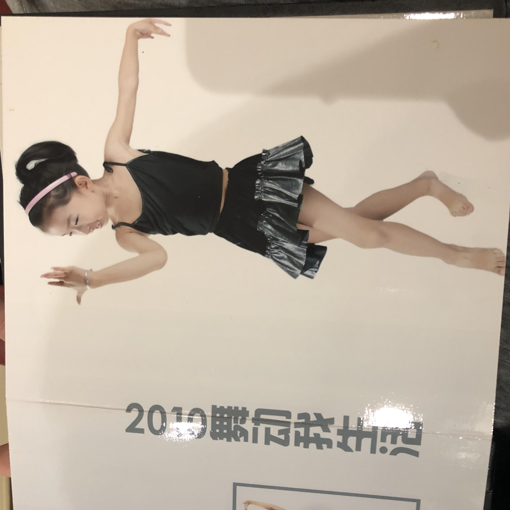
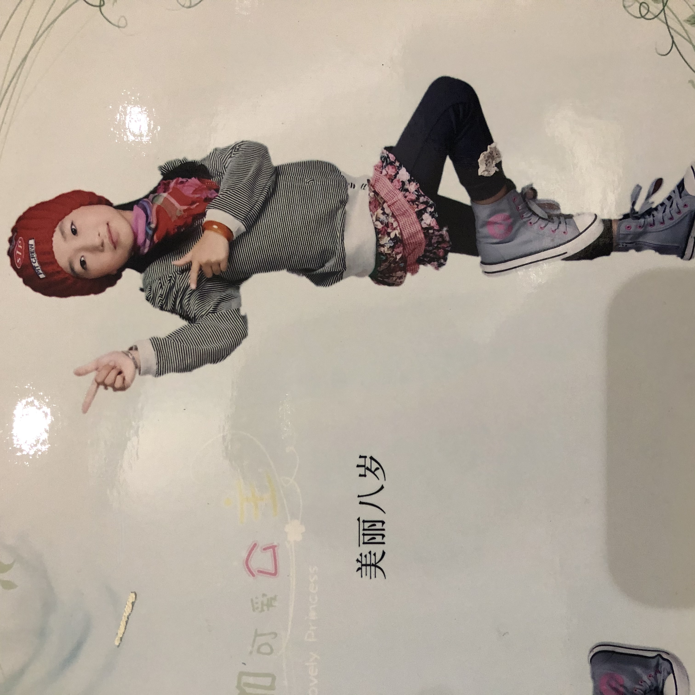
Youth Period · Musical Enlightenment
Started learning piano and vocals in childhood, establishing a solid musical foundation
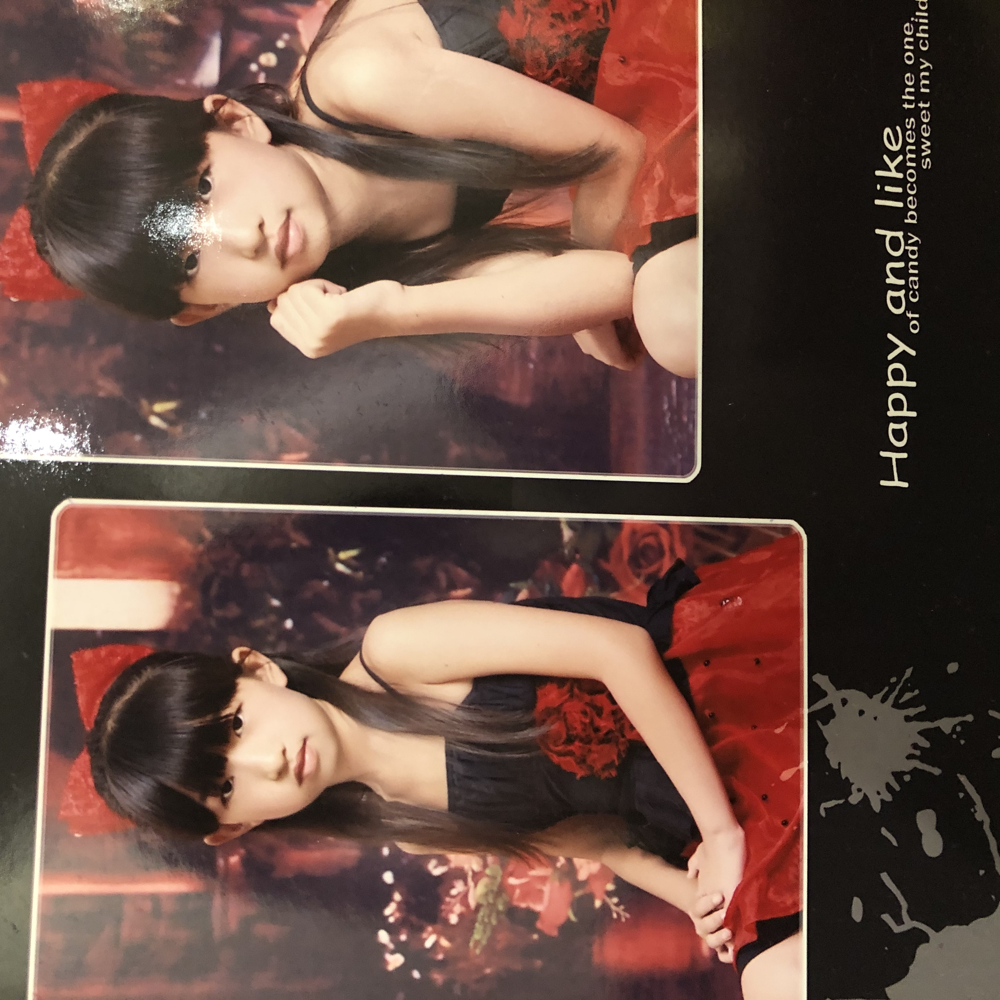
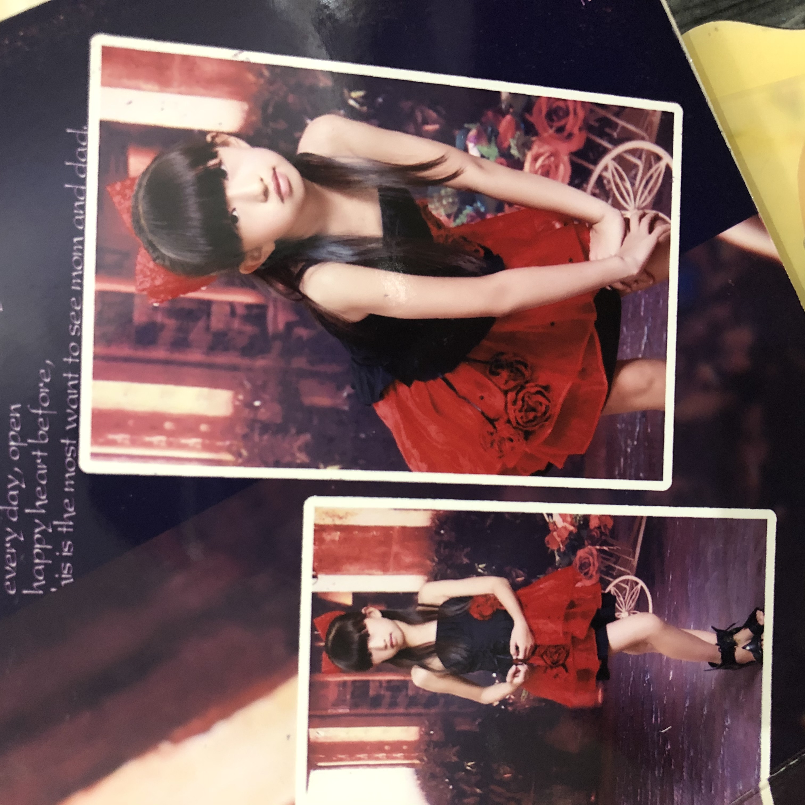
University Period · Raffles Music College
Successfully admitted to Raffles Music College's Pop Vocal Performance major, participated in various performances and opening ceremony shows
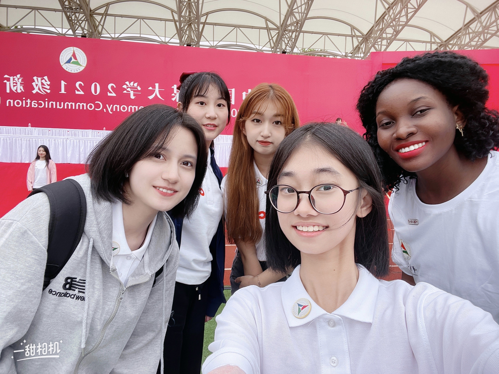
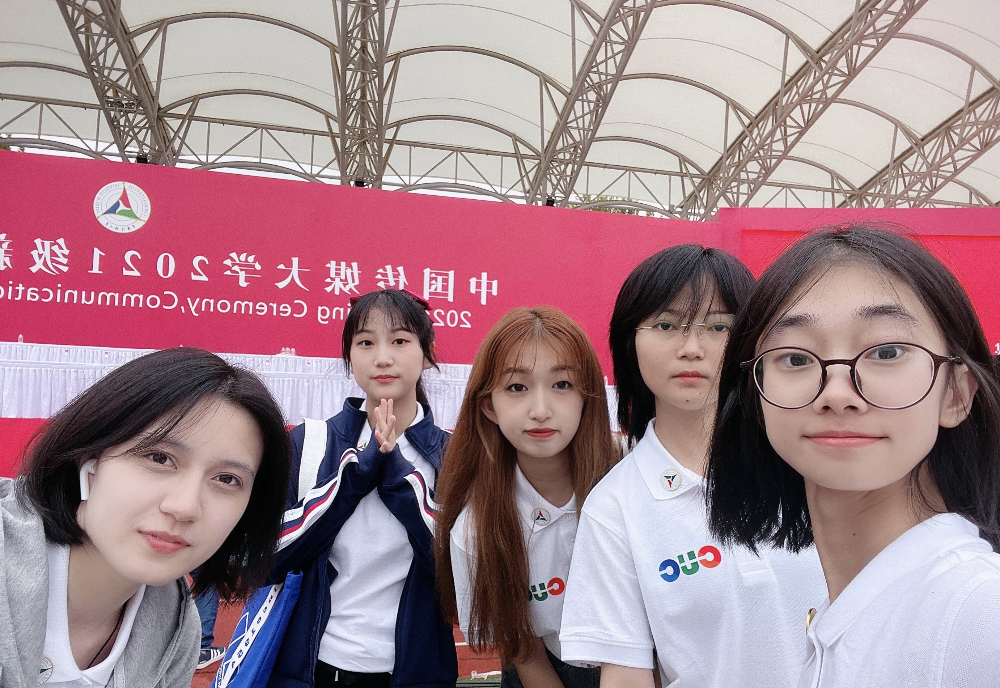
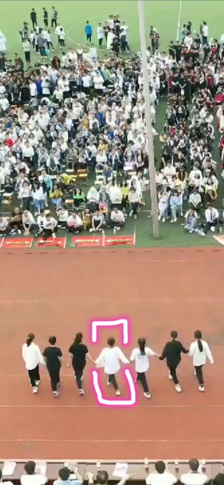
Professional Development · Commercial Practice
Participated in multiple commercial performances, accumulating rich stage experience
Personal Life · Daily Moments
Recording beautiful moments in life, showing diverse interests and hobbies
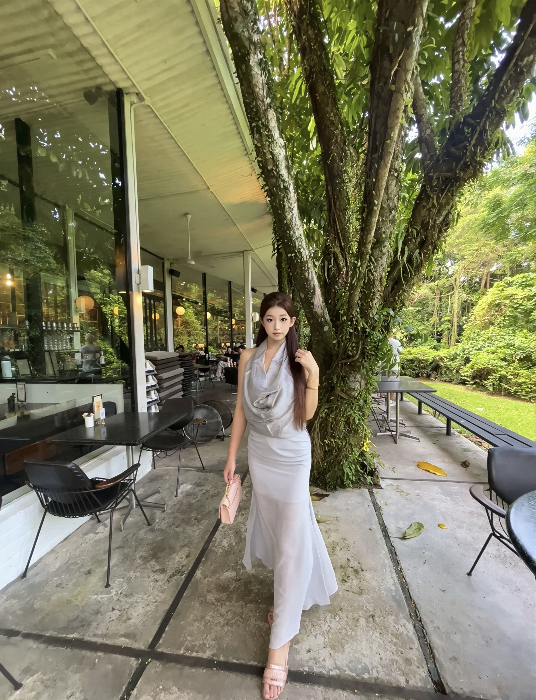

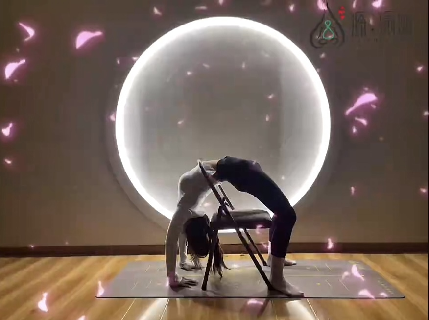
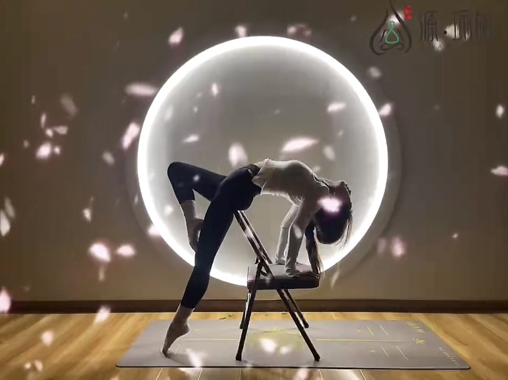
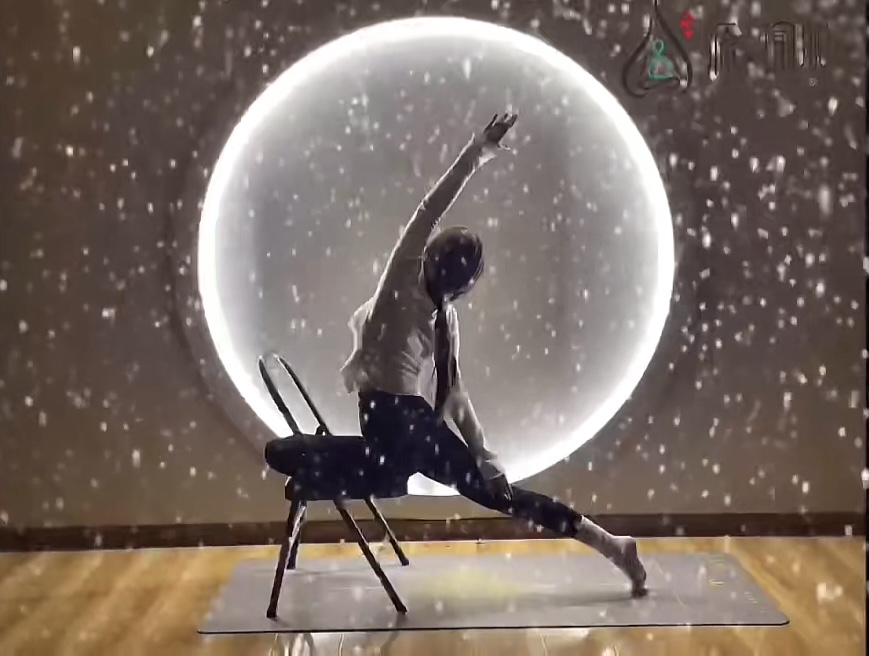